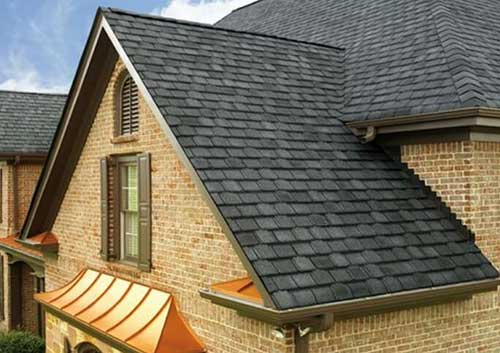
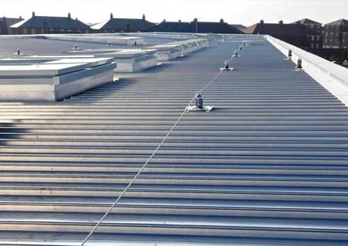

Arlington · Grand Prairie · DFW
Roofing done right in DFW since 1968.
Locally owned and operated for over 50 years. Residential and commercial roofing, insurance claims and home remodeling from one team.
1968Over five decades of North Texas roofs
What we do
One local team, from the roof to the remodel.
From a single leak to a full replacement after a storm, we handle the work and the paperwork.


01
Residential roofing
Repairs and full replacements for homes across the Metroplex.
02
Commercial roofing
Roof systems for businesses and commercial properties.
03
Insurance claims
Help with storm damage documentation and the claim process.
04
Home remodel
Construction and remodeling work beyond the roof.
Free estimate
Call (817) 886-6710
Talk to a roofer who has been doing this since 1968.
- Office
- 1615 W Abram St #110, Arlington, TX 76013
- Hours
- Mon–Sat 8:00 am – 5:00 pm